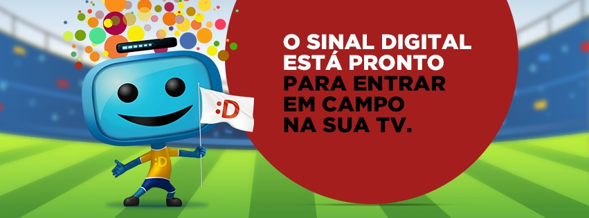

Contatos e Informações
Entre em contato conosco para mais informações
IFCE
Av. Parque Central - Distrito Industrial I Maracanaú, Ceará
35215191 - Educação Ambiental / Recursos Naturais
35215173- Fiscalização Ambiental
- 
1° Recicla Maracanaú fortalecendo laços entre empresas e sociedade, a favor da reciclagem e em defesa do meio ambiente. Com o único intuito de discussão entre meio ambiente e reciclagem, propondo ideias inovadoras, otimização do conhecimento e certificação ambiental. Desse modo, com o intuito de incrementar nossa semana, visamos que empresas parceiras nos auxiliem com a exposição dos seus trabalhos e projetos, quer seja sobre sustentabilidade, quer sobre reciclagem. Além disso, essas empresas podem realizar atividades variadas com os alunos, questionários e ter a capacidade de divulgação de seus trabalhos perante o público.
Av. Parque Central - Distrito Industrial I Maracanaú, Ceará
35215191 - Educação Ambiental / Recursos Naturais
35215173- Fiscalização Ambiental